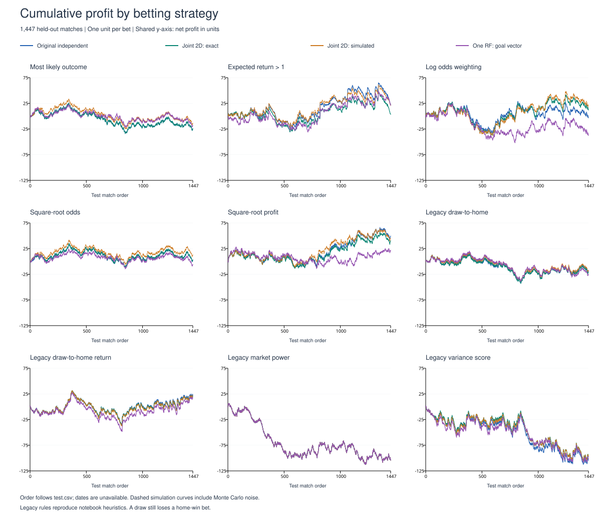
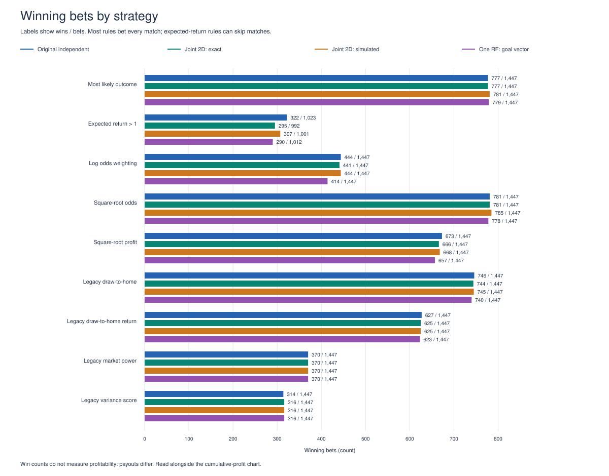
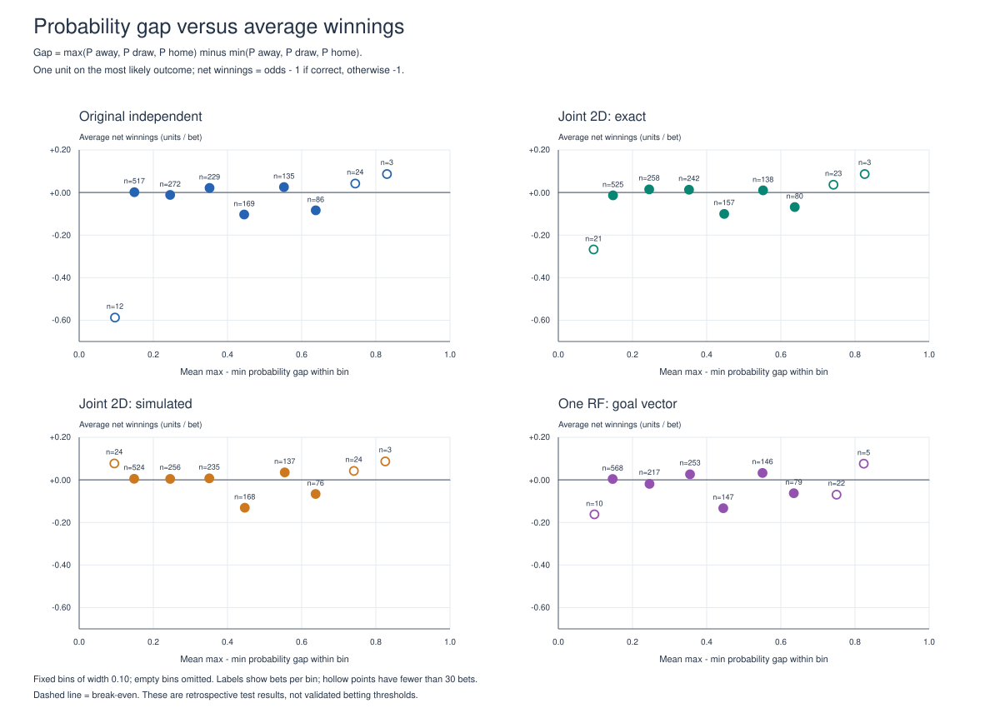
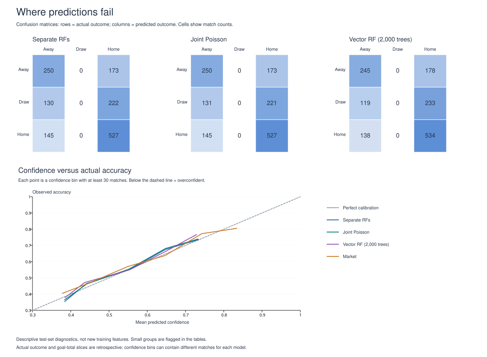
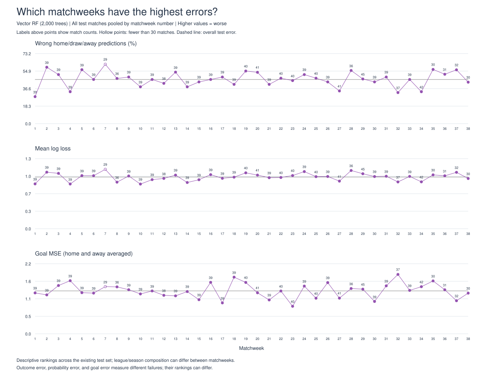
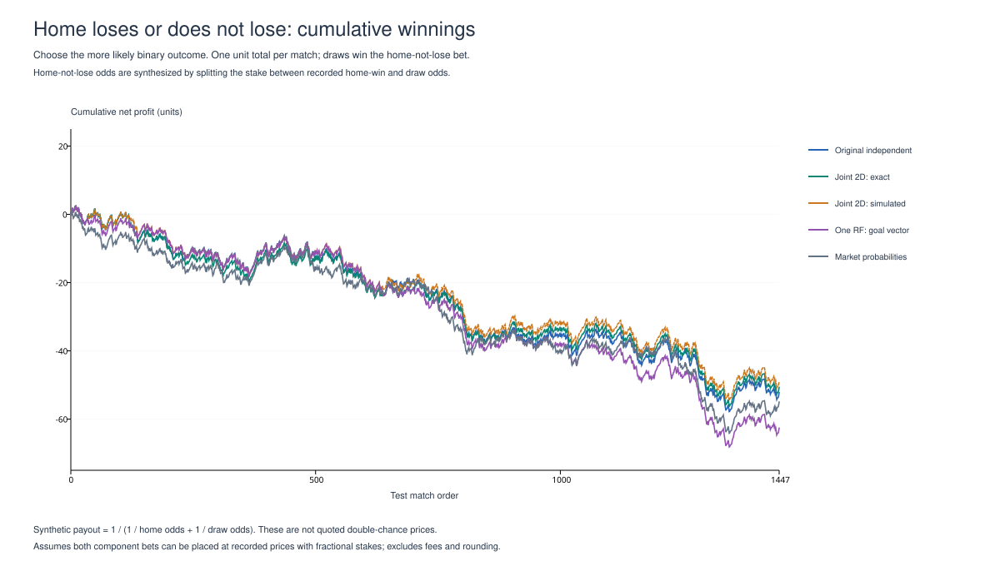
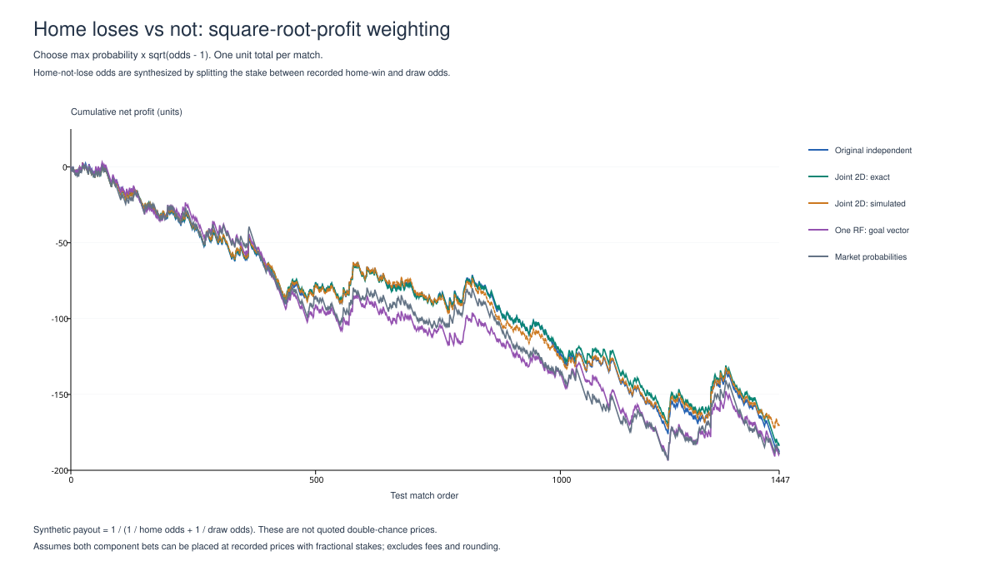
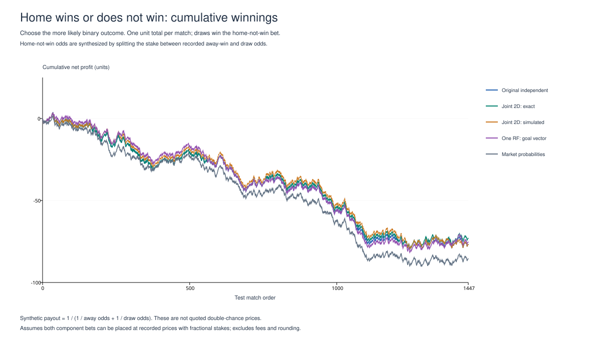
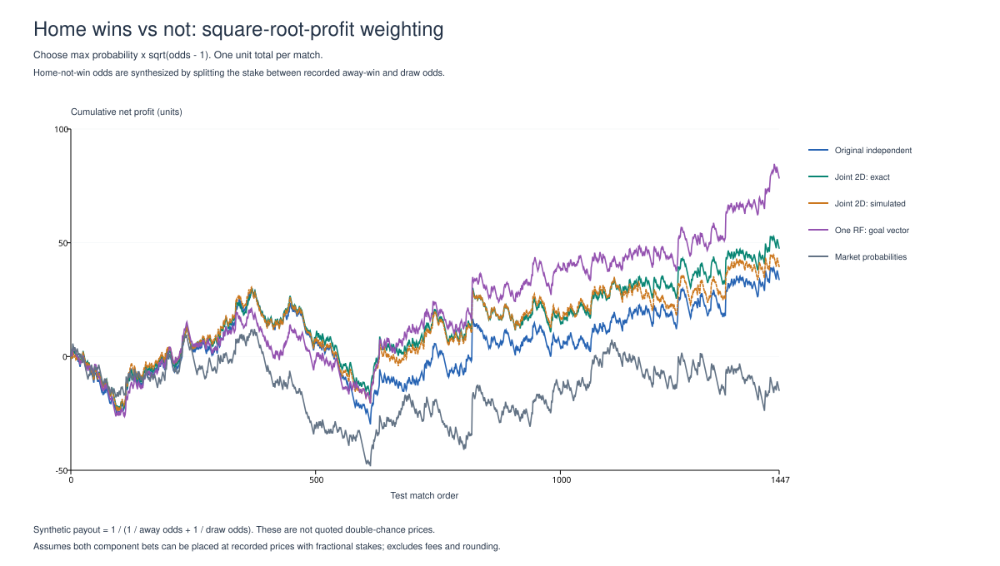
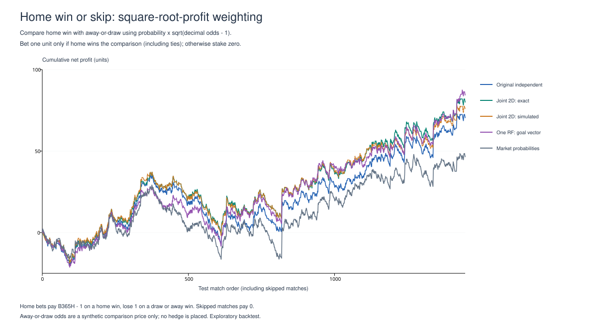

11,561 training matches; 1,447 test matches. One unit per bet. Lower log loss and Brier score are better.
Original independent model, exact joint probabilities, 50,000 joint simulations per match, and one multi-output forest predicting a goal vector. The vector model uses independent Poisson outcome conversion.


Most-likely outcome, one-unit stake. Fixed 0.10-wide bins; max-minus-min probability gap.

| model | matches | correct | accuracy | log_loss | brier | auc_ovr | predicted_draws | correct_draws | mean_draw_probability | actual_draw_rate | joint_score_nll | home_goal_rmse | away_goal_rmse | home_goal_mse | away_goal_mse | mean_goal_mse | home_goal_mae | away_goal_mae | mean_goal_mae |
|---|---|---|---|---|---|---|---|---|---|---|---|---|---|---|---|---|---|---|---|
| RF_independent | 1447 | 777 | 0.53697 | 0.97879 | 0.58244 | 0.66357 | 0 | 0 | 0.23390 | 0.24326 | 2.89866 | 1.24593 | 1.06679 | 1.55235 | 1.13805 | 1.34520 | 0.96169 | 0.83020 | 0.89595 |
| RF_independent_calibrated | 1447 | 776 | 0.53628 | 0.97901 | 0.58258 | 0.66362 | 0 | 0 | 0.23392 | 0.24326 | 2.89893 | 1.24607 | 1.06707 | 1.55269 | 1.13863 | 1.34566 | 0.96142 | 0.83089 | 0.89615 |
| RF_bivariate_exact | 1447 | 777 | 0.53697 | 0.97883 | 0.58248 | 0.66362 | 0 | 0 | 0.23636 | 0.24326 | 2.89877 | 1.24649 | 1.06671 | 1.55373 | 1.13786 | 1.34580 | 0.96179 | 0.83047 | 0.89613 |
| RF_bivariate_simulated | 1447 | 781 | 0.53974 | 0.97892 | 0.58257 | 0.66330 | 0 | 0 | 0.23630 | 0.24326 | 2.89877 | 1.24649 | 1.06671 | 1.55373 | 1.13786 | 1.34580 | 0.96179 | 0.83047 | 0.89613 |
| RF_vector | 1447 | 779 | 0.53836 | 0.97884 | 0.58266 | 0.66243 | 0 | 0 | 0.23461 | 0.24326 | 2.89903 | 1.24595 | 1.06691 | 1.55240 | 1.13830 | 1.34535 | 0.96185 | 0.83115 | 0.89650 |
| Market | 1447 | 778 | 0.53766 | 0.98067 | 0.58397 | 0.65736 | 3 | 0 | 0.24985 | 0.24326 | NaN | NaN | NaN | NaN | NaN | NaN | NaN | NaN | NaN |
| model | strategy | bets | wins | losses | win_rate | net_profit_units | roi |
|---|---|---|---|---|---|---|---|
| RF_independent | Most likely outcome | 1447 | 777 | 670 | 0.5370 | -24.4600 | -0.0169 |
| RF_independent | Expected return > 1 | 1023 | 322 | 701 | 0.3148 | 22.3500 | 0.0218 |
| RF_independent | Log odds weighting | 1447 | 444 | 1003 | 0.3068 | -3.5400 | -0.0024 |
| RF_independent | Square-root odds weighting | 1447 | 781 | 666 | 0.5397 | 2.7900 | 0.0019 |
| RF_independent | Square-root profit weighting | 1447 | 673 | 774 | 0.4651 | 49.6200 | 0.0343 |
| RF_independent | Legacy draw-to-home weighting | 1447 | 746 | 701 | 0.5155 | -17.8500 | -0.0123 |
| RF_independent | Legacy draw-to-home return weighting | 1447 | 627 | 820 | 0.4333 | 22.0600 | 0.0152 |
| RF_independent | Legacy market power weighting | 1447 | 370 | 1077 | 0.2557 | -104.2900 | -0.0721 |
| RF_independent | Legacy variance score | 1447 | 314 | 1133 | 0.2170 | -104.5900 | -0.0723 |
| RF_independent_calibrated | Most likely outcome | 1447 | 776 | 671 | 0.5363 | -27.0100 | -0.0187 |
| RF_independent_calibrated | Expected return > 1 | 1024 | 320 | 704 | 0.3125 | 24.2300 | 0.0237 |
| RF_independent_calibrated | Log odds weighting | 1447 | 442 | 1005 | 0.3055 | -6.6400 | -0.0046 |
| RF_independent_calibrated | Square-root odds weighting | 1447 | 781 | 666 | 0.5397 | 3.2000 | 0.0022 |
| RF_independent_calibrated | Square-root profit weighting | 1447 | 673 | 774 | 0.4651 | 50.5400 | 0.0349 |
| RF_independent_calibrated | Legacy draw-to-home weighting | 1447 | 746 | 701 | 0.5155 | -17.8500 | -0.0123 |
| RF_independent_calibrated | Legacy draw-to-home return weighting | 1447 | 626 | 821 | 0.4326 | 20.8100 | 0.0144 |
| RF_independent_calibrated | Legacy market power weighting | 1447 | 370 | 1077 | 0.2557 | -104.2900 | -0.0721 |
| RF_independent_calibrated | Legacy variance score | 1447 | 315 | 1132 | 0.2177 | -101.5900 | -0.0702 |
| RF_bivariate_exact | Most likely outcome | 1447 | 777 | 670 | 0.5370 | -24.4600 | -0.0169 |
| RF_bivariate_exact | Expected return > 1 | 992 | 295 | 697 | 0.2974 | 3.4100 | 0.0034 |
| RF_bivariate_exact | Log odds weighting | 1447 | 441 | 1006 | 0.3048 | 11.7200 | 0.0081 |
| RF_bivariate_exact | Square-root odds weighting | 1447 | 781 | 666 | 0.5397 | 3.2700 | 0.0023 |
| RF_bivariate_exact | Square-root profit weighting | 1447 | 666 | 781 | 0.4603 | 40.4500 | 0.0280 |
| RF_bivariate_exact | Legacy draw-to-home weighting | 1447 | 744 | 703 | 0.5142 | -20.3000 | -0.0140 |
| RF_bivariate_exact | Legacy draw-to-home return weighting | 1447 | 625 | 822 | 0.4319 | 19.5900 | 0.0135 |
| RF_bivariate_exact | Legacy market power weighting | 1447 | 370 | 1077 | 0.2557 | -104.2900 | -0.0721 |
| RF_bivariate_exact | Legacy variance score | 1447 | 316 | 1131 | 0.2184 | -97.0400 | -0.0671 |
| RF_bivariate_simulated | Most likely outcome | 1447 | 781 | 666 | 0.5397 | -13.6600 | -0.0094 |
| RF_bivariate_simulated | Expected return > 1 | 1001 | 307 | 694 | 0.3067 | 21.1600 | 0.0211 |
| RF_bivariate_simulated | Log odds weighting | 1447 | 444 | 1003 | 0.3068 | 17.4700 | 0.0121 |
| RF_bivariate_simulated | Square-root odds weighting | 1447 | 785 | 662 | 0.5425 | 12.8500 | 0.0089 |
| RF_bivariate_simulated | Square-root profit weighting | 1447 | 668 | 779 | 0.4616 | 46.9000 | 0.0324 |
| RF_bivariate_simulated | Legacy draw-to-home weighting | 1447 | 745 | 702 | 0.5149 | -16.5500 | -0.0114 |
| RF_bivariate_simulated | Legacy draw-to-home return weighting | 1447 | 625 | 822 | 0.4319 | 19.5100 | 0.0135 |
| RF_bivariate_simulated | Legacy market power weighting | 1447 | 370 | 1077 | 0.2557 | -104.2900 | -0.0721 |
| RF_bivariate_simulated | Legacy variance score | 1447 | 316 | 1131 | 0.2184 | -97.3400 | -0.0673 |
| RF_vector | Most likely outcome | 1447 | 779 | 668 | 0.5384 | -17.7300 | -0.0123 |
| RF_vector | Expected return > 1 | 1012 | 290 | 722 | 0.2866 | 21.0100 | 0.0208 |
| RF_vector | Log odds weighting | 1447 | 414 | 1033 | 0.2861 | -37.7900 | -0.0261 |
| RF_vector | Square-root odds weighting | 1447 | 778 | 669 | 0.5377 | -5.8100 | -0.0040 |
| RF_vector | Square-root profit weighting | 1447 | 657 | 790 | 0.4540 | 21.8500 | 0.0151 |
| RF_vector | Legacy draw-to-home weighting | 1447 | 740 | 707 | 0.5114 | -24.5800 | -0.0170 |
| RF_vector | Legacy draw-to-home return weighting | 1447 | 623 | 824 | 0.4305 | 16.4400 | 0.0114 |
| RF_vector | Legacy market power weighting | 1447 | 370 | 1077 | 0.2557 | -104.2900 | -0.0721 |
| RF_vector | Legacy variance score | 1447 | 316 | 1131 | 0.2184 | -101.3100 | -0.0700 |
Positive goal bias means overprediction; negative means underprediction. Outcome accuracy within an actual-outcome slice is that outcome's recall. Team groups count matches with the team at either venue and overlap. Only teams with at least 30 matches are ranked. Tables show descriptive results, not proven causes of failure. Confidence calibration assesses the most likely outcome; outcome_calibration.csv also assesses each of away/draw/home separately.

| model | area | group | matches | accuracy | mean_log_loss | mean_confidence | goal_mae | home_goal_bias | away_goal_bias |
|---|---|---|---|---|---|---|---|---|---|
| RF_independent | Overall | All matches | 1447 | 0.5370 | 0.9788 | 0.5261 | 0.8959 | -0.0460 | 0.0612 |
| RF_independent | Actual outcome (retrospective) | Away | 423 | 0.5910 | 0.9739 | 0.5056 | 0.9605 | 0.7477 | -0.7934 |
| RF_independent | Actual outcome (retrospective) | Draw | 352 | 0.0000 | 1.4360 | 0.5063 | 0.7324 | 0.4180 | 0.1808 |
| RF_independent | Actual outcome (retrospective) | Home | 672 | 0.7842 | 0.7424 | 0.5494 | 0.9410 | -0.7887 | 0.5364 |
| RF_independent | Actual total goals (retrospective) | 0–1 | 346 | 0.4682 | 1.0499 | 0.5112 | 0.9934 | 1.0186 | 0.9507 |
| RF_independent | Actual total goals (retrospective) | 2–3 | 686 | 0.5364 | 0.9774 | 0.5226 | 0.6245 | 0.1475 | 0.1377 |
| RF_independent | Actual total goals (retrospective) | 4–5 | 312 | 0.5577 | 0.9640 | 0.5362 | 1.0300 | -0.9309 | -0.5932 |
| RF_independent | Actual total goals (retrospective) | 6+ | 103 | 0.7087 | 0.7941 | 0.5686 | 1.9701 | -2.2311 | -1.4540 |
| RF_independent | Player rating gap (absolute) | 0–2 | 441 | 0.4694 | 1.0525 | 0.4592 | 0.8558 | -0.0488 | 0.1365 |
| RF_independent | Player rating gap (absolute) | 2–5 | 530 | 0.5151 | 0.9982 | 0.4999 | 0.8867 | -0.0518 | 0.0118 |
| RF_independent | Player rating gap (absolute) | 5+ | 476 | 0.6239 | 0.8889 | 0.6173 | 0.9435 | -0.0371 | 0.0465 |
| RF_independent | Matchweek | 1–10 | 377 | 0.5305 | 0.9657 | 0.5284 | 0.9084 | -0.0620 | 0.0398 |
| RF_independent | Matchweek | 11–20 | 392 | 0.5408 | 0.9738 | 0.5258 | 0.8863 | -0.0407 | 0.0986 |
| RF_independent | Matchweek | 21–30 | 398 | 0.5377 | 1.0024 | 0.5240 | 0.8771 | 0.0808 | 0.1167 |
| RF_independent | Matchweek | 31+ | 280 | 0.5393 | 0.9697 | 0.5264 | 0.9194 | -0.2123 | -0.0414 |
| RF_independent | Individual matchweek | 1 | 39 | 0.7179 | 0.8510 | 0.5591 | 0.8781 | 0.0056 | -0.1733 |
| RF_independent | Individual matchweek | 2 | 39 | 0.3846 | 1.0696 | 0.5378 | 0.9236 | 0.1971 | 0.1320 |
| RF_independent | Individual matchweek | 3 | 39 | 0.5128 | 1.0441 | 0.5246 | 1.0034 | 0.1801 | -0.0481 |
| RF_independent | Individual matchweek | 4 | 39 | 0.6667 | 0.8532 | 0.5650 | 0.8793 | 0.0754 | 0.1360 |
| RF_independent | Individual matchweek | 5 | 39 | 0.4359 | 1.0131 | 0.5019 | 0.8821 | -0.1728 | 0.0281 |
| RF_independent | Individual matchweek | 6 | 39 | 0.5641 | 1.0026 | 0.5399 | 0.8465 | -0.0061 | 0.0937 |
| RF_independent | Individual matchweek | 7 | 29 | 0.3448 | 1.1306 | 0.5175 | 0.9765 | 0.1885 | 0.1437 |
| RF_independent | Individual matchweek | 8 | 36 | 0.5556 | 0.8817 | 0.5127 | 0.9504 | -0.3985 | 0.0499 |
| RF_independent | Individual matchweek | 9 | 39 | 0.4872 | 0.9954 | 0.4943 | 0.8816 | -0.2305 | -0.0775 |
| RF_independent | Individual matchweek | 10 | 39 | 0.5897 | 0.8516 | 0.5273 | 0.8836 | -0.4206 | 0.1415 |
| RF_independent | Individual matchweek | 11 | 39 | 0.5385 | 0.9295 | 0.5245 | 0.8892 | -0.2214 | 0.1644 |
| RF_independent | Individual matchweek | 12 | 38 | 0.6053 | 0.9507 | 0.5203 | 0.8951 | 0.0751 | 0.3178 |
| RF_independent | Individual matchweek | 13 | 39 | 0.4615 | 1.0178 | 0.5313 | 0.8391 | -0.0873 | 0.0576 |
| RF_independent | Individual matchweek | 14 | 39 | 0.6154 | 0.8772 | 0.5511 | 0.9003 | -0.2890 | 0.4345 |
| RF_independent | Individual matchweek | 15 | 39 | 0.5641 | 0.9265 | 0.4991 | 0.8216 | -0.1592 | -0.0550 |
| RF_independent | Individual matchweek | 16 | 39 | 0.5385 | 1.0073 | 0.5189 | 0.9221 | -0.1269 | 0.0424 |
| RF_independent | Individual matchweek | 17 | 39 | 0.5897 | 0.9537 | 0.5178 | 0.7105 | 0.1614 | -0.2555 |
| RF_independent | Individual matchweek | 18 | 39 | 0.5897 | 0.9689 | 0.5416 | 0.9883 | 0.2197 | -0.0818 |
| RF_independent | Individual matchweek | 19 | 40 | 0.4500 | 1.0687 | 0.5119 | 1.0301 | 0.1414 | 0.2371 |
| RF_independent | Individual matchweek | 20 | 41 | 0.4634 | 1.0323 | 0.5410 | 0.8646 | -0.1183 | 0.1255 |
| RF_independent | Individual matchweek | 21 | 39 | 0.5897 | 0.9595 | 0.5078 | 0.9032 | 0.1971 | 0.2233 |
| RF_independent | Individual matchweek | 22 | 40 | 0.5000 | 0.9692 | 0.5279 | 0.8965 | -0.0182 | 0.3940 |
| RF_independent | Individual matchweek | 23 | 40 | 0.5500 | 1.0091 | 0.5305 | 0.7234 | 0.0909 | 0.0703 |
| RF_independent | Individual matchweek | 24 | 39 | 0.4872 | 1.0846 | 0.5406 | 0.9814 | 0.1451 | 0.1309 |
| RF_independent | Individual matchweek | 25 | 40 | 0.5250 | 0.9841 | 0.4995 | 0.8360 | 0.0182 | 0.4593 |
| RF_independent | Individual matchweek | 26 | 39 | 0.5641 | 0.9880 | 0.5256 | 1.0057 | -0.0905 | -0.0399 |
| RF_independent | Individual matchweek | 27 | 41 | 0.6341 | 0.9016 | 0.5410 | 0.8458 | 0.1694 | 0.1210 |
| RF_independent | Individual matchweek | 28 | 36 | 0.4444 | 1.0975 | 0.5347 | 0.9021 | -0.0308 | -0.3428 |
| RF_independent | Individual matchweek | 29 | 45 | 0.5111 | 1.0458 | 0.5160 | 0.9158 | 0.0449 | -0.1186 |
| RF_independent | Individual matchweek | 30 | 39 | 0.5641 | 0.9918 | 0.5184 | 0.7629 | 0.2783 | 0.2559 |
| RF_independent | Individual matchweek | 31 | 39 | 0.4872 | 1.0011 | 0.5277 | 0.9312 | -0.2237 | -0.0604 |
| RF_independent | Individual matchweek | 32 | 37 | 0.6757 | 0.8785 | 0.5295 | 1.0069 | -0.6512 | -0.1751 |
| RF_independent | Individual matchweek | 33 | 39 | 0.5385 | 0.9861 | 0.5234 | 0.8630 | -0.0849 | -0.2526 |
| RF_independent | Individual matchweek | 34 | 42 | 0.6667 | 0.8884 | 0.5439 | 0.9406 | -0.3287 | 0.0825 |
| RF_independent | Individual matchweek | 35 | 30 | 0.4333 | 1.0170 | 0.5216 | 1.0292 | -0.0213 | 0.1727 |
| RF_independent | Individual matchweek | 36 | 31 | 0.4839 | 1.0009 | 0.5382 | 0.9082 | -0.1403 | -0.0247 |
| RF_independent | Individual matchweek | 37 | 32 | 0.4375 | 1.0708 | 0.5228 | 0.8220 | 0.0912 | -0.0390 |
| RF_independent | Individual matchweek | 38 | 30 | 0.5333 | 0.9466 | 0.4963 | 0.8454 | -0.2478 | 0.0150 |
| RF_independent | Market favorite strength | ≤40% | 262 | 0.4008 | 1.0860 | 0.3982 | 0.8611 | -0.0865 | 0.1658 |
| RF_independent | Market favorite strength | 40–55% | 660 | 0.4894 | 1.0432 | 0.4766 | 0.8942 | -0.0237 | 0.0509 |
| RF_independent | Market favorite strength | 55–70% | 379 | 0.6201 | 0.9155 | 0.6193 | 0.8900 | -0.0003 | 0.0372 |
| RF_independent | Market favorite strength | 70%+ | 146 | 0.7808 | 0.6593 | 0.7377 | 0.9817 | -0.1931 | -0.0179 |
| RF_independent | Prediction confidence | ≤40% | 175 | 0.3543 | 1.1040 | 0.3841 | 0.8706 | -0.0064 | 0.1137 |
| RF_independent | Prediction confidence | 40–50% | 520 | 0.4654 | 1.0621 | 0.4413 | 0.8951 | -0.0821 | 0.0343 |
| RF_independent | Prediction confidence | 50–60% | 379 | 0.5488 | 1.0003 | 0.5517 | 0.8593 | 0.0267 | 0.1067 |
| RF_independent | Prediction confidence | 60–70% | 231 | 0.6753 | 0.8440 | 0.6475 | 0.9294 | -0.0593 | 0.0507 |
| RF_independent | Prediction confidence | 70–80% | 125 | 0.7360 | 0.7490 | 0.7342 | 0.9449 | -0.0325 | -0.0398 |
| RF_independent | Prediction confidence | 80%+ | 17 | 1.0000 | 0.1838 | 0.8324 | 1.1865 | -0.8900 | 0.2138 |
| RF_bivariate_exact | Overall | All matches | 1447 | 0.5370 | 0.9788 | 0.5237 | 0.8961 | -0.0490 | 0.0642 |
| RF_bivariate_exact | Actual outcome (retrospective) | Away | 423 | 0.5910 | 0.9757 | 0.5035 | 0.9597 | 0.7462 | -0.7954 |
| RF_bivariate_exact | Actual outcome (retrospective) | Draw | 352 | 0.0000 | 1.4255 | 0.5041 | 0.7312 | 0.4160 | 0.1840 |
| RF_bivariate_exact | Actual outcome (retrospective) | Home | 672 | 0.7842 | 0.7468 | 0.5468 | 0.9425 | -0.7931 | 0.5425 |
| RF_bivariate_exact | Actual total goals (retrospective) | 0–1 | 346 | 0.4682 | 1.0496 | 0.5089 | 0.9933 | 1.0169 | 0.9534 |
| RF_bivariate_exact | Actual total goals (retrospective) | 2–3 | 686 | 0.5364 | 0.9773 | 0.5203 | 0.6244 | 0.1449 | 0.1408 |
| RF_bivariate_exact | Actual total goals (retrospective) | 4–5 | 312 | 0.5577 | 0.9639 | 0.5338 | 1.0306 | -0.9350 | -0.5903 |
| RF_bivariate_exact | Actual total goals (retrospective) | 6+ | 103 | 0.7087 | 0.7962 | 0.5661 | 1.9719 | -2.2369 | -1.4508 |
| RF_bivariate_exact | Player rating gap (absolute) | 0–2 | 441 | 0.4694 | 1.0521 | 0.4572 | 0.8568 | -0.0499 | 0.1410 |
| RF_bivariate_exact | Player rating gap (absolute) | 2–5 | 530 | 0.5151 | 0.9984 | 0.4976 | 0.8870 | -0.0545 | 0.0144 |
| RF_bivariate_exact | Player rating gap (absolute) | 5+ | 476 | 0.6239 | 0.8892 | 0.6145 | 0.9427 | -0.0420 | 0.0484 |
| RF_bivariate_exact | Matchweek | 1–10 | 377 | 0.5305 | 0.9655 | 0.5261 | 0.9086 | -0.0653 | 0.0421 |
| RF_bivariate_exact | Matchweek | 11–20 | 392 | 0.5408 | 0.9742 | 0.5234 | 0.8865 | -0.0435 | 0.1015 |
| RF_bivariate_exact | Matchweek | 21–30 | 398 | 0.5377 | 1.0021 | 0.5216 | 0.8774 | 0.0787 | 0.1205 |
| RF_bivariate_exact | Matchweek | 31+ | 280 | 0.5393 | 0.9701 | 0.5240 | 0.9194 | -0.2162 | -0.0384 |
| RF_bivariate_exact | Individual matchweek | 1 | 39 | 0.7179 | 0.8521 | 0.5566 | 0.8782 | 0.0027 | -0.1735 |
| RF_bivariate_exact | Individual matchweek | 2 | 39 | 0.3846 | 1.0667 | 0.5354 | 0.9244 | 0.1926 | 0.1359 |
| RF_bivariate_exact | Individual matchweek | 3 | 39 | 0.5128 | 1.0439 | 0.5224 | 1.0036 | 0.1779 | -0.0488 |
| RF_bivariate_exact | Individual matchweek | 4 | 39 | 0.6667 | 0.8531 | 0.5625 | 0.8792 | 0.0694 | 0.1401 |
| RF_bivariate_exact | Individual matchweek | 5 | 39 | 0.4359 | 1.0131 | 0.4998 | 0.8817 | -0.1751 | 0.0287 |
| RF_bivariate_exact | Individual matchweek | 6 | 39 | 0.5641 | 1.0022 | 0.5374 | 0.8450 | -0.0102 | 0.0981 |
| RF_bivariate_exact | Individual matchweek | 7 | 29 | 0.3448 | 1.1298 | 0.5152 | 0.9746 | 0.1867 | 0.1451 |
| RF_bivariate_exact | Individual matchweek | 8 | 36 | 0.5556 | 0.8830 | 0.5105 | 0.9515 | -0.4014 | 0.0526 |
| RF_bivariate_exact | Individual matchweek | 9 | 39 | 0.4872 | 0.9946 | 0.4920 | 0.8835 | -0.2328 | -0.0744 |
| RF_bivariate_exact | Individual matchweek | 10 | 39 | 0.5897 | 0.8526 | 0.5250 | 0.8849 | -0.4237 | 0.1442 |
| RF_bivariate_exact | Individual matchweek | 11 | 39 | 0.5385 | 0.9300 | 0.5221 | 0.8904 | -0.2248 | 0.1676 |
| RF_bivariate_exact | Individual matchweek | 12 | 38 | 0.6053 | 0.9518 | 0.5180 | 0.8961 | 0.0731 | 0.3213 |
| RF_bivariate_exact | Individual matchweek | 13 | 39 | 0.4615 | 1.0179 | 0.5289 | 0.8393 | -0.0897 | 0.0611 |
| RF_bivariate_exact | Individual matchweek | 14 | 39 | 0.6154 | 0.8785 | 0.5486 | 0.9002 | -0.2925 | 0.4371 |
| RF_bivariate_exact | Individual matchweek | 15 | 39 | 0.5641 | 0.9273 | 0.4969 | 0.8221 | -0.1611 | -0.0520 |
| RF_bivariate_exact | Individual matchweek | 16 | 39 | 0.5385 | 1.0075 | 0.5165 | 0.9207 | -0.1299 | 0.0450 |
| RF_bivariate_exact | Individual matchweek | 17 | 39 | 0.5897 | 0.9530 | 0.5155 | 0.7112 | 0.1592 | -0.2541 |
| RF_bivariate_exact | Individual matchweek | 18 | 39 | 0.5897 | 0.9690 | 0.5391 | 0.9878 | 0.2154 | -0.0777 |
| RF_bivariate_exact | Individual matchweek | 19 | 40 | 0.4500 | 1.0684 | 0.5096 | 1.0300 | 0.1400 | 0.2388 |
| RF_bivariate_exact | Individual matchweek | 20 | 41 | 0.4634 | 1.0328 | 0.5385 | 0.8650 | -0.1221 | 0.1292 |
| RF_bivariate_exact | Individual matchweek | 21 | 39 | 0.5897 | 0.9595 | 0.5056 | 0.9043 | 0.1945 | 0.2246 |
| RF_bivariate_exact | Individual matchweek | 22 | 40 | 0.5000 | 0.9694 | 0.5254 | 0.8964 | -0.0208 | 0.3983 |
| RF_bivariate_exact | Individual matchweek | 23 | 40 | 0.5500 | 1.0088 | 0.5281 | 0.7229 | 0.0882 | 0.0718 |
| RF_bivariate_exact | Individual matchweek | 24 | 39 | 0.4872 | 1.0836 | 0.5382 | 0.9816 | 0.1427 | 0.1345 |
| RF_bivariate_exact | Individual matchweek | 25 | 40 | 0.5250 | 0.9837 | 0.4972 | 0.8375 | 0.0178 | 0.4643 |
| RF_bivariate_exact | Individual matchweek | 26 | 39 | 0.5641 | 0.9878 | 0.5232 | 1.0057 | -0.0930 | -0.0347 |
| RF_bivariate_exact | Individual matchweek | 27 | 41 | 0.6341 | 0.9020 | 0.5385 | 0.8472 | 0.1676 | 0.1240 |
| RF_bivariate_exact | Individual matchweek | 28 | 36 | 0.4444 | 1.0950 | 0.5322 | 0.9020 | -0.0330 | -0.3371 |
| RF_bivariate_exact | Individual matchweek | 29 | 45 | 0.5111 | 1.0456 | 0.5136 | 0.9148 | 0.0429 | -0.1145 |
| RF_bivariate_exact | Individual matchweek | 30 | 39 | 0.5641 | 0.9918 | 0.5161 | 0.7636 | 0.2763 | 0.2597 |
| RF_bivariate_exact | Individual matchweek | 31 | 39 | 0.4872 | 1.0027 | 0.5254 | 0.9315 | -0.2262 | -0.0580 |
| RF_bivariate_exact | Individual matchweek | 32 | 37 | 0.6757 | 0.8791 | 0.5271 | 1.0080 | -0.6543 | -0.1687 |
| RF_bivariate_exact | Individual matchweek | 33 | 39 | 0.5385 | 0.9857 | 0.5210 | 0.8629 | -0.0888 | -0.2500 |
| RF_bivariate_exact | Individual matchweek | 34 | 42 | 0.6667 | 0.8900 | 0.5413 | 0.9409 | -0.3328 | 0.0868 |
| RF_bivariate_exact | Individual matchweek | 35 | 30 | 0.4333 | 1.0178 | 0.5193 | 1.0272 | -0.0250 | 0.1762 |
| RF_bivariate_exact | Individual matchweek | 36 | 31 | 0.4839 | 1.0006 | 0.5358 | 0.9085 | -0.1439 | -0.0227 |
| RF_bivariate_exact | Individual matchweek | 37 | 32 | 0.4375 | 1.0697 | 0.5204 | 0.8210 | 0.0865 | -0.0363 |
| RF_bivariate_exact | Individual matchweek | 38 | 30 | 0.5333 | 0.9466 | 0.4942 | 0.8461 | -0.2539 | 0.0146 |
| RF_bivariate_exact | Market favorite strength | ≤40% | 262 | 0.4008 | 1.0860 | 0.3968 | 0.8619 | -0.0858 | 0.1677 |
| RF_bivariate_exact | Market favorite strength | 40–55% | 660 | 0.4894 | 1.0432 | 0.4745 | 0.8948 | -0.0248 | 0.0528 |
| RF_bivariate_exact | Market favorite strength | 55–70% | 379 | 0.6201 | 0.9155 | 0.6162 | 0.8892 | -0.0058 | 0.0405 |
| RF_bivariate_exact | Market favorite strength | 70%+ | 146 | 0.7808 | 0.6598 | 0.7342 | 0.9814 | -0.2043 | -0.0088 |
| RF_bivariate_exact | Prediction confidence | ≤40% | 189 | 0.3651 | 1.1000 | 0.3840 | 0.8741 | -0.0038 | 0.0948 |
| RF_bivariate_exact | Prediction confidence | 40–50% | 517 | 0.4623 | 1.0640 | 0.4418 | 0.8967 | -0.0785 | 0.0451 |
| RF_bivariate_exact | Prediction confidence | 50–60% | 379 | 0.5541 | 0.9967 | 0.5519 | 0.8561 | 0.0217 | 0.1030 |
| RF_bivariate_exact | Prediction confidence | 60–70% | 226 | 0.6814 | 0.8386 | 0.6479 | 0.9344 | -0.0649 | 0.0489 |
| RF_bivariate_exact | Prediction confidence | 70–80% | 119 | 0.7395 | 0.7386 | 0.7324 | 0.9413 | -0.0638 | -0.0198 |
| RF_bivariate_exact | Prediction confidence | 80%+ | 17 | 1.0000 | 0.1878 | 0.8290 | 1.1920 | -0.9135 | 0.2270 |
| RF_vector | Overall | All matches | 1447 | 0.5384 | 0.9788 | 0.5223 | 0.8965 | -0.0460 | 0.0549 |
| RF_vector | Actual outcome (retrospective) | Away | 423 | 0.5792 | 0.9789 | 0.4993 | 0.9629 | 0.7502 | -0.8042 |
| RF_vector | Actual outcome (retrospective) | Draw | 352 | 0.0000 | 1.4341 | 0.5030 | 0.7334 | 0.4189 | 0.1758 |
| RF_vector | Actual outcome (retrospective) | Home | 672 | 0.7946 | 0.7404 | 0.5468 | 0.9402 | -0.7908 | 0.5323 |
| RF_vector | Actual total goals (retrospective) | 0–1 | 346 | 0.4711 | 1.0491 | 0.5065 | 0.9901 | 1.0192 | 0.9460 |
| RF_vector | Actual total goals (retrospective) | 2–3 | 686 | 0.5394 | 0.9780 | 0.5187 | 0.6261 | 0.1470 | 0.1313 |
| RF_vector | Actual total goals (retrospective) | 4–5 | 312 | 0.5545 | 0.9649 | 0.5330 | 1.0322 | -0.9310 | -0.5988 |
| RF_vector | Actual total goals (retrospective) | 6+ | 103 | 0.7087 | 0.7906 | 0.5661 | 1.9720 | -2.2291 | -1.4675 |
| RF_vector | Player rating gap (absolute) | 0–2 | 441 | 0.4649 | 1.0524 | 0.4582 | 0.8579 | -0.0506 | 0.1304 |
| RF_vector | Player rating gap (absolute) | 2–5 | 530 | 0.5226 | 0.9971 | 0.4970 | 0.8867 | -0.0528 | 0.0001 |
| RF_vector | Player rating gap (absolute) | 5+ | 476 | 0.6239 | 0.8904 | 0.6097 | 0.9431 | -0.0343 | 0.0460 |
| RF_vector | Matchweek | 1–10 | 377 | 0.5332 | 0.9644 | 0.5261 | 0.9094 | -0.0581 | 0.0300 |
| RF_vector | Matchweek | 11–20 | 392 | 0.5306 | 0.9737 | 0.5214 | 0.8865 | -0.0421 | 0.0912 |
| RF_vector | Matchweek | 21–30 | 398 | 0.5452 | 1.0029 | 0.5197 | 0.8774 | 0.0819 | 0.1131 |
| RF_vector | Matchweek | 31+ | 280 | 0.5464 | 0.9713 | 0.5220 | 0.9203 | -0.2170 | -0.0451 |
| RF_vector | Individual matchweek | 1 | 39 | 0.7179 | 0.8493 | 0.5586 | 0.8820 | 0.0213 | -0.1754 |
| RF_vector | Individual matchweek | 2 | 39 | 0.4103 | 1.0712 | 0.5381 | 0.9251 | 0.2032 | 0.1114 |
| RF_vector | Individual matchweek | 3 | 39 | 0.4872 | 1.0488 | 0.5207 | 1.0002 | 0.1879 | -0.0631 |
| RF_vector | Individual matchweek | 4 | 39 | 0.6667 | 0.8471 | 0.5675 | 0.8823 | 0.0820 | 0.1055 |
| RF_vector | Individual matchweek | 5 | 39 | 0.4359 | 1.0066 | 0.5002 | 0.8827 | -0.1671 | 0.0144 |
| RF_vector | Individual matchweek | 6 | 39 | 0.5385 | 1.0045 | 0.5374 | 0.8496 | -0.0105 | 0.0998 |
| RF_vector | Individual matchweek | 7 | 29 | 0.3793 | 1.1249 | 0.5126 | 0.9781 | 0.1881 | 0.1315 |
| RF_vector | Individual matchweek | 8 | 36 | 0.5278 | 0.8820 | 0.5061 | 0.9494 | -0.4000 | 0.0487 |
| RF_vector | Individual matchweek | 9 | 39 | 0.5128 | 0.9992 | 0.4908 | 0.8865 | -0.2278 | -0.0829 |
| RF_vector | Individual matchweek | 10 | 39 | 0.6154 | 0.8456 | 0.5237 | 0.8785 | -0.4214 | 0.1375 |
| RF_vector | Individual matchweek | 11 | 39 | 0.5385 | 0.9300 | 0.5228 | 0.8945 | -0.2250 | 0.1521 |
| RF_vector | Individual matchweek | 12 | 38 | 0.5789 | 0.9525 | 0.5161 | 0.8934 | 0.0793 | 0.3148 |
| RF_vector | Individual matchweek | 13 | 39 | 0.4615 | 1.0157 | 0.5253 | 0.8401 | -0.0916 | 0.0651 |
| RF_vector | Individual matchweek | 14 | 39 | 0.6154 | 0.8755 | 0.5455 | 0.8958 | -0.2901 | 0.4255 |
| RF_vector | Individual matchweek | 15 | 39 | 0.5641 | 0.9282 | 0.4950 | 0.8313 | -0.1616 | -0.0655 |
| RF_vector | Individual matchweek | 16 | 39 | 0.5385 | 1.0244 | 0.5158 | 0.9218 | -0.1310 | 0.0440 |
| RF_vector | Individual matchweek | 17 | 39 | 0.5128 | 0.9544 | 0.5136 | 0.7089 | 0.1622 | -0.2678 |
| RF_vector | Individual matchweek | 18 | 39 | 0.5897 | 0.9765 | 0.5359 | 0.9979 | 0.2167 | -0.0988 |
| RF_vector | Individual matchweek | 19 | 40 | 0.4500 | 1.0588 | 0.5054 | 1.0228 | 0.1383 | 0.2342 |
| RF_vector | Individual matchweek | 20 | 41 | 0.4634 | 1.0155 | 0.5380 | 0.8564 | -0.1161 | 0.1098 |
| RF_vector | Individual matchweek | 21 | 39 | 0.5897 | 0.9661 | 0.5057 | 0.9007 | 0.1886 | 0.2100 |
| RF_vector | Individual matchweek | 22 | 40 | 0.5250 | 0.9704 | 0.5234 | 0.8974 | -0.0175 | 0.3934 |
| RF_vector | Individual matchweek | 23 | 40 | 0.5500 | 1.0076 | 0.5266 | 0.7236 | 0.0941 | 0.0551 |
| RF_vector | Individual matchweek | 24 | 39 | 0.4872 | 1.0824 | 0.5359 | 0.9794 | 0.1463 | 0.1273 |
| RF_vector | Individual matchweek | 25 | 40 | 0.5250 | 0.9862 | 0.4954 | 0.8384 | 0.0180 | 0.4662 |
| RF_vector | Individual matchweek | 26 | 39 | 0.5641 | 0.9895 | 0.5192 | 1.0043 | -0.0912 | -0.0467 |
| RF_vector | Individual matchweek | 27 | 41 | 0.6585 | 0.9018 | 0.5348 | 0.8494 | 0.1706 | 0.1180 |
| RF_vector | Individual matchweek | 28 | 36 | 0.4444 | 1.1030 | 0.5317 | 0.9075 | -0.0207 | -0.3451 |
| RF_vector | Individual matchweek | 29 | 45 | 0.5333 | 1.0418 | 0.5109 | 0.9117 | 0.0438 | -0.1184 |
| RF_vector | Individual matchweek | 30 | 39 | 0.5641 | 0.9885 | 0.5153 | 0.7647 | 0.2838 | 0.2563 |
| RF_vector | Individual matchweek | 31 | 39 | 0.5128 | 0.9946 | 0.5245 | 0.9293 | -0.2266 | -0.0608 |
| RF_vector | Individual matchweek | 32 | 37 | 0.6757 | 0.8861 | 0.5230 | 1.0073 | -0.6524 | -0.1818 |
| RF_vector | Individual matchweek | 33 | 39 | 0.5385 | 0.9913 | 0.5201 | 0.8651 | -0.0928 | -0.2569 |
| RF_vector | Individual matchweek | 34 | 42 | 0.6667 | 0.8881 | 0.5400 | 0.9441 | -0.3334 | 0.0914 |
| RF_vector | Individual matchweek | 35 | 30 | 0.4333 | 1.0203 | 0.5172 | 1.0231 | -0.0264 | 0.1639 |
| RF_vector | Individual matchweek | 36 | 31 | 0.4839 | 1.0025 | 0.5297 | 0.9092 | -0.1511 | -0.0316 |
| RF_vector | Individual matchweek | 37 | 32 | 0.4375 | 1.0686 | 0.5204 | 0.8226 | 0.0923 | -0.0431 |
| RF_vector | Individual matchweek | 38 | 30 | 0.5667 | 0.9512 | 0.4937 | 0.8527 | -0.2549 | 0.0027 |
| RF_vector | Market favorite strength | ≤40% | 262 | 0.4084 | 1.0867 | 0.3929 | 0.8560 | -0.0872 | 0.1433 |
| RF_vector | Market favorite strength | 40–55% | 660 | 0.4894 | 1.0445 | 0.4714 | 0.8978 | -0.0228 | 0.0492 |
| RF_vector | Market favorite strength | 55–70% | 379 | 0.6201 | 0.9128 | 0.6170 | 0.8896 | 0.0001 | 0.0304 |
| RF_vector | Market favorite strength | 70%+ | 146 | 0.7808 | 0.6597 | 0.7382 | 0.9813 | -0.1970 | -0.0142 |
| RF_vector | Prediction confidence | ≤40% | 211 | 0.3791 | 1.0947 | 0.3855 | 0.8949 | -0.0247 | 0.0625 |
| RF_vector | Prediction confidence | 40–50% | 496 | 0.4718 | 1.0619 | 0.4368 | 0.8847 | -0.0591 | 0.0472 |
| RF_vector | Prediction confidence | 50–60% | 385 | 0.5506 | 0.9955 | 0.5548 | 0.8639 | 0.0046 | 0.0673 |
| RF_vector | Prediction confidence | 60–70% | 216 | 0.6667 | 0.8546 | 0.6506 | 0.9414 | -0.0344 | 0.0681 |
| RF_vector | Prediction confidence | 70–80% | 116 | 0.7672 | 0.6981 | 0.7289 | 0.9402 | -0.1391 | 0.0151 |
| RF_vector | Prediction confidence | 80%+ | 23 | 0.8696 | 0.4292 | 0.8296 | 1.0703 | -0.4463 | 0.0188 |
| Market | Overall | All matches | 1447 | 0.5377 | 0.9807 | 0.5211 | NaN | NaN | NaN |
| Market | Actual outcome (retrospective) | Away | 423 | 0.5887 | 1.0089 | 0.4989 | NaN | NaN | NaN |
| Market | Actual outcome (retrospective) | Draw | 352 | 0.0000 | 1.3762 | 0.5030 | NaN | NaN | NaN |
| Market | Actual outcome (retrospective) | Home | 672 | 0.7872 | 0.7558 | 0.5445 | NaN | NaN | NaN |
| Market | Actual total goals (retrospective) | 0–1 | 346 | 0.4682 | 1.0620 | 0.5042 | NaN | NaN | NaN |
| Market | Actual total goals (retrospective) | 2–3 | 686 | 0.5364 | 0.9765 | 0.5168 | NaN | NaN | NaN |
| Market | Actual total goals (retrospective) | 4–5 | 312 | 0.5609 | 0.9595 | 0.5337 | NaN | NaN | NaN |
| Market | Actual total goals (retrospective) | 6+ | 103 | 0.7087 | 0.7996 | 0.5675 | NaN | NaN | NaN |
| Market | Player rating gap (absolute) | 0–2 | 441 | 0.4580 | 1.0500 | 0.4617 | NaN | NaN | NaN |
| Market | Player rating gap (absolute) | 2–5 | 530 | 0.5283 | 0.9989 | 0.4957 | NaN | NaN | NaN |
| Market | Player rating gap (absolute) | 5+ | 476 | 0.6218 | 0.8961 | 0.6043 | NaN | NaN | NaN |
| Market | Matchweek | 1–10 | 377 | 0.5358 | 0.9632 | 0.5268 | NaN | NaN | NaN |
| Market | Matchweek | 11–20 | 392 | 0.5357 | 0.9788 | 0.5215 | NaN | NaN | NaN |
| Market | Matchweek | 21–30 | 398 | 0.5352 | 1.0008 | 0.5151 | NaN | NaN | NaN |
| Market | Matchweek | 31+ | 280 | 0.5464 | 0.9782 | 0.5212 | NaN | NaN | NaN |
| Market | Individual matchweek | 1 | 39 | 0.7179 | 0.8374 | 0.5585 | NaN | NaN | NaN |
| Market | Individual matchweek | 2 | 39 | 0.4103 | 1.0621 | 0.5348 | NaN | NaN | NaN |
| Market | Individual matchweek | 3 | 39 | 0.5128 | 1.0519 | 0.5201 | NaN | NaN | NaN |
| Market | Individual matchweek | 4 | 39 | 0.6154 | 0.8500 | 0.5715 | NaN | NaN | NaN |
| Market | Individual matchweek | 5 | 39 | 0.4359 | 1.0049 | 0.5014 | NaN | NaN | NaN |
| Market | Individual matchweek | 6 | 39 | 0.5641 | 1.0167 | 0.5442 | NaN | NaN | NaN |
| Market | Individual matchweek | 7 | 29 | 0.3448 | 1.1598 | 0.5122 | NaN | NaN | NaN |
| Market | Individual matchweek | 8 | 36 | 0.5833 | 0.8700 | 0.5057 | NaN | NaN | NaN |
| Market | Individual matchweek | 9 | 39 | 0.4872 | 0.9954 | 0.4944 | NaN | NaN | NaN |
| Market | Individual matchweek | 10 | 39 | 0.6410 | 0.8274 | 0.5196 | NaN | NaN | NaN |
| Market | Individual matchweek | 11 | 39 | 0.5385 | 0.9492 | 0.5210 | NaN | NaN | NaN |
| Market | Individual matchweek | 12 | 38 | 0.6053 | 0.9689 | 0.5191 | NaN | NaN | NaN |
| Market | Individual matchweek | 13 | 39 | 0.4615 | 1.0251 | 0.5313 | NaN | NaN | NaN |
| Market | Individual matchweek | 14 | 39 | 0.6154 | 0.8632 | 0.5498 | NaN | NaN | NaN |
| Market | Individual matchweek | 15 | 39 | 0.5385 | 0.9286 | 0.4905 | NaN | NaN | NaN |
| Market | Individual matchweek | 16 | 39 | 0.5385 | 1.0373 | 0.5150 | NaN | NaN | NaN |
| Market | Individual matchweek | 17 | 39 | 0.5897 | 0.9367 | 0.5151 | NaN | NaN | NaN |
| Market | Individual matchweek | 18 | 39 | 0.5641 | 0.9866 | 0.5361 | NaN | NaN | NaN |
| Market | Individual matchweek | 19 | 40 | 0.4250 | 1.0655 | 0.5025 | NaN | NaN | NaN |
| Market | Individual matchweek | 20 | 41 | 0.4878 | 1.0222 | 0.5344 | NaN | NaN | NaN |
| Market | Individual matchweek | 21 | 39 | 0.5641 | 0.9578 | 0.4979 | NaN | NaN | NaN |
| Market | Individual matchweek | 22 | 40 | 0.5250 | 0.9875 | 0.5238 | NaN | NaN | NaN |
| Market | Individual matchweek | 23 | 40 | 0.5500 | 1.0055 | 0.5174 | NaN | NaN | NaN |
| Market | Individual matchweek | 24 | 39 | 0.4615 | 1.0961 | 0.5269 | NaN | NaN | NaN |
| Market | Individual matchweek | 25 | 40 | 0.5250 | 0.9713 | 0.4929 | NaN | NaN | NaN |
| Market | Individual matchweek | 26 | 39 | 0.5641 | 0.9893 | 0.5152 | NaN | NaN | NaN |
| Market | Individual matchweek | 27 | 41 | 0.6098 | 0.8952 | 0.5318 | NaN | NaN | NaN |
| Market | Individual matchweek | 28 | 36 | 0.4444 | 1.0866 | 0.5283 | NaN | NaN | NaN |
| Market | Individual matchweek | 29 | 45 | 0.5333 | 1.0394 | 0.5096 | NaN | NaN | NaN |
| Market | Individual matchweek | 30 | 39 | 0.5641 | 0.9862 | 0.5082 | NaN | NaN | NaN |
| Market | Individual matchweek | 31 | 39 | 0.5385 | 1.0238 | 0.5207 | NaN | NaN | NaN |
| Market | Individual matchweek | 32 | 37 | 0.6757 | 0.8862 | 0.5239 | NaN | NaN | NaN |
| Market | Individual matchweek | 33 | 39 | 0.5385 | 0.9877 | 0.5214 | NaN | NaN | NaN |
| Market | Individual matchweek | 34 | 42 | 0.6905 | 0.8982 | 0.5449 | NaN | NaN | NaN |
| Market | Individual matchweek | 35 | 30 | 0.4333 | 1.0292 | 0.5139 | NaN | NaN | NaN |
| Market | Individual matchweek | 36 | 31 | 0.4839 | 0.9910 | 0.5262 | NaN | NaN | NaN |
| Market | Individual matchweek | 37 | 32 | 0.4062 | 1.0891 | 0.5206 | NaN | NaN | NaN |
| Market | Individual matchweek | 38 | 30 | 0.5333 | 0.9496 | 0.4880 | NaN | NaN | NaN |
| Market | Market favorite strength | ≤40% | 262 | 0.4046 | 1.0886 | 0.3778 | NaN | NaN | NaN |
| Market | Market favorite strength | 40–55% | 660 | 0.4894 | 1.0450 | 0.4697 | NaN | NaN | NaN |
| Market | Market favorite strength | 55–70% | 379 | 0.6201 | 0.9180 | 0.6155 | NaN | NaN | NaN |
| Market | Market favorite strength | 70%+ | 146 | 0.7808 | 0.6587 | 0.7652 | NaN | NaN | NaN |
| Market | Prediction confidence | ≤40% | 262 | 0.4046 | 1.0886 | 0.3778 | NaN | NaN | NaN |
| Market | Prediction confidence | 40–50% | 488 | 0.4693 | 1.0591 | 0.4494 | NaN | NaN | NaN |
| Market | Prediction confidence | 50–60% | 333 | 0.5706 | 0.9810 | 0.5496 | NaN | NaN | NaN |
| Market | Prediction confidence | 60–70% | 218 | 0.6376 | 0.8905 | 0.6465 | NaN | NaN | NaN |
| Market | Prediction confidence | 70–80% | 110 | 0.7727 | 0.6776 | 0.7428 | NaN | NaN | NaN |
| Market | Prediction confidence | 80%+ | 36 | 0.8056 | 0.6009 | 0.8339 | NaN | NaN | NaN |
| model | area | group | matches | accuracy | mean_log_loss | mean_confidence | goal_mae | home_goal_bias | away_goal_bias |
|---|---|---|---|---|---|---|---|---|---|
| Market | Team (home or away) | Brentford | 38 | 0.3947 | 1.1444 | 0.4968 | NaN | NaN | NaN |
| Market | Team (home or away) | Mainz 05 | 34 | 0.4412 | 1.1155 | 0.4834 | NaN | NaN | NaN |
| Market | Team (home or away) | Köln | 34 | 0.3824 | 1.1062 | 0.4852 | NaN | NaN | NaN |
| Market | Team (home or away) | Gladbach | 34 | 0.3824 | 1.1029 | 0.4944 | NaN | NaN | NaN |
| Market | Team (home or away) | Leverkusen | 34 | 0.4706 | 1.0991 | 0.5089 | NaN | NaN | NaN |
| RF_bivariate_exact | Team (home or away) | Brentford | 38 | 0.4211 | 1.1468 | 0.4998 | 1.0078 | -0.1641 | 0.1355 |
| RF_bivariate_exact | Team (home or away) | Mainz 05 | 34 | 0.4412 | 1.1251 | 0.4838 | 1.0068 | -0.2864 | -0.2199 |
| RF_bivariate_exact | Team (home or away) | Gladbach | 34 | 0.3824 | 1.1070 | 0.4953 | 1.0699 | -0.5009 | 0.1405 |
| RF_bivariate_exact | Team (home or away) | Köln | 34 | 0.3824 | 1.1048 | 0.4894 | 1.1122 | -0.3350 | 0.0219 |
| RF_bivariate_exact | Team (home or away) | Salernitana | 38 | 0.4211 | 1.0969 | 0.5270 | 0.9466 | -0.2791 | 0.0986 |
| RF_independent | Team (home or away) | Brentford | 38 | 0.4211 | 1.1487 | 0.5021 | 1.0087 | -0.1620 | 0.1318 |
| RF_independent | Team (home or away) | Mainz 05 | 34 | 0.4412 | 1.1263 | 0.4860 | 1.0074 | -0.2843 | -0.2242 |
| RF_independent | Team (home or away) | Gladbach | 34 | 0.3824 | 1.1079 | 0.4975 | 1.0690 | -0.4959 | 0.1388 |
| RF_independent | Team (home or away) | Köln | 34 | 0.3824 | 1.1064 | 0.4917 | 1.1129 | -0.3327 | 0.0187 |
| RF_independent | Team (home or away) | Salernitana | 38 | 0.4211 | 1.0992 | 0.5295 | 0.9483 | -0.2788 | 0.0942 |
| RF_vector | Team (home or away) | Brentford | 38 | 0.4211 | 1.1569 | 0.4990 | 1.0103 | -0.1593 | 0.1352 |
| RF_vector | Team (home or away) | Mainz 05 | 34 | 0.4412 | 1.1255 | 0.4821 | 1.0159 | -0.2785 | -0.2132 |
| RF_vector | Team (home or away) | Köln | 34 | 0.3824 | 1.1039 | 0.4875 | 1.1189 | -0.3268 | 0.0188 |
| RF_vector | Team (home or away) | Gladbach | 34 | 0.3824 | 1.1015 | 0.4915 | 1.0723 | -0.5019 | 0.1405 |
| RF_vector | Team (home or away) | Salernitana | 38 | 0.4474 | 1.0976 | 0.5274 | 0.9472 | -0.2766 | 0.1010 |
| model | source_test_row | home_team_name | away_team_name | home_score | away_score | predicted_outcome | confidence | actual_outcome_probability | log_loss | p_Away | p_Draw | p_Home |
|---|---|---|---|---|---|---|---|---|---|---|---|---|
| RF_vector | 1307 | Manchester City | Brentford | 1 | 2 | Home | 0.7983 | 0.0700 | 2.6599 | 0.0700 | 0.1318 | 0.7983 |
| RF_vector | 819 | Augsburg | Bayern Munich | 1 | 0 | Away | 0.7527 | 0.0933 | 2.3720 | 0.7527 | 0.1540 | 0.0933 |
| RF_vector | 1326 | Liverpool | Leeds United | 1 | 2 | Home | 0.7405 | 0.0981 | 2.3219 | 0.0981 | 0.1614 | 0.7405 |
| RF_vector | 568 | Inter | Empoli | 0 | 1 | Home | 0.7311 | 0.1016 | 2.2864 | 0.1016 | 0.1672 | 0.7311 |
| RF_vector | 1221 | Chelsea | Southampton | 0 | 1 | Home | 0.7247 | 0.1054 | 2.2504 | 0.1054 | 0.1700 | 0.7247 |
| RF_vector | 1337 | Nottingham Forest | Liverpool | 1 | 0 | Away | 0.7217 | 0.1094 | 2.2126 | 0.7217 | 0.1689 | 0.1094 |
| RF_vector | 773 | Leverkusen | Augsburg | 1 | 2 | Home | 0.7059 | 0.1154 | 2.1589 | 0.1154 | 0.1787 | 0.7059 |
| RF_vector | 783 | Dortmund | Werder Bremen | 2 | 3 | Home | 0.7006 | 0.1186 | 2.1318 | 0.1186 | 0.1808 | 0.7006 |
| RF_vector | 1285 | Manchester City | Everton | 1 | 1 | Home | 0.8098 | 0.1215 | 2.1079 | 0.0687 | 0.1215 | 0.8098 |
| RF_vector | 1145 | Tottenham Hotspur | AFC Bournemouth | 2 | 3 | Home | 0.6913 | 0.1237 | 2.0899 | 0.1237 | 0.1850 | 0.6913 |
| RF_vector | 336 | Elche | Atlético Madrid | 1 | 0 | Away | 0.6947 | 0.1253 | 2.0774 | 0.6947 | 0.1801 | 0.1253 |
| RF_vector | 281 | Villarreal | Valladolid | 1 | 2 | Home | 0.6853 | 0.1262 | 2.0699 | 0.1262 | 0.1885 | 0.6853 |
| RF_vector | 674 | Inter | Monza | 0 | 1 | Home | 0.6828 | 0.1273 | 2.0611 | 0.1273 | 0.1899 | 0.6828 |
| RF_vector | 1062 | Dortmund | Mainz 05 | 2 | 2 | Home | 0.8066 | 0.1275 | 2.0595 | 0.0659 | 0.1275 | 0.8066 |
| RF_vector | 807 | Bayern Munich | Stuttgart | 2 | 2 | Home | 0.8027 | 0.1294 | 2.0449 | 0.0680 | 0.1294 | 0.8027 |
Ranked by outcome error rate, with log loss breaking ties. All test matches are pooled by matchweek number; groups below 30 are flagged. Rankings are descriptive.

| model | matchweek | matches | small_sample | errors | error_rate | mean_log_loss | goal_mae | goal_mse | error_rate_rank | mean_log_loss_rank | goal_mse_rank |
|---|---|---|---|---|---|---|---|---|---|---|---|
| RF_vector | 7 | 29 | True | 18 | 0.6207 | 1.1249 | 0.9781 | 1.4796 | 1.0000 | 1.0000 | 11.0000 |
| RF_vector | 2 | 39 | False | 23 | 0.5897 | 1.0712 | 0.9251 | 1.2199 | 2.0000 | 4.0000 | 28.0000 |
| RF_vector | 35 | 30 | False | 17 | 0.5667 | 1.0203 | 1.0231 | 1.6580 | 3.0000 | 10.0000 | 4.0000 |
| RF_vector | 5 | 39 | False | 22 | 0.5641 | 1.0066 | 0.8827 | 1.2892 | 4.0000 | 14.0000 | 22.0000 |
| RF_vector | 37 | 32 | False | 18 | 0.5625 | 1.0686 | 0.8226 | 1.0366 | 5.0000 | 5.0000 | 35.0000 |
| RF_vector | 28 | 36 | False | 20 | 0.5556 | 1.1030 | 0.9075 | 1.4199 | 6.0000 | 2.0000 | 14.0000 |
| RF_vector | 19 | 40 | False | 22 | 0.5500 | 1.0588 | 1.0228 | 1.6106 | 7.0000 | 6.0000 | 6.0000 |
| RF_vector | 13 | 39 | False | 21 | 0.5385 | 1.0157 | 0.8401 | 1.1900 | 8.0000 | 11.0000 | 30.0000 |
| RF_vector | 20 | 41 | False | 22 | 0.5366 | 1.0155 | 0.8564 | 1.2866 | 9.0000 | 12.0000 | 23.0000 |
| RF_vector | 36 | 31 | False | 16 | 0.5161 | 1.0025 | 0.9092 | 1.3810 | 10.0000 | 16.0000 | 17.0000 |
This is an outcome conversion of the existing score models, not a new binary-trained model. P(home loses)=P(away win); P(home not lose)=P(home win)+P(draw). Bet on the more likely side, with ties assigned to home loses. There are no double-chance prices in the CSV. The no-loss side is constructed by splitting a one-unit total stake between home and draw: D=1/(1/home_odds+1/draw_odds), home stake=D/home_odds, draw stake=D/draw_odds. Either home win or draw returns D units; away win returns zero. An away-win bet uses B365A. Unlike the legacy draw-to-home heuristic, an actual draw is a winning outcome for this no-loss bet, with its own lower synthetic payout. Assumes fractional stakes and simultaneous availability of recorded odds, without fees or rounding. In bet_ledger.csv, pick=3 denotes home-or-draw; pick=0 denotes away. The dedicated ledger records both component stakes. Wins counts correct binary selections; net winnings are reported separately using the effective odds.
| model | strategy | bets | wins | losses | win_rate | net_profit_units | roi | home_loss_bets | home_not_loss_bets | loss_side_profit | not_loss_side_profit |
|---|---|---|---|---|---|---|---|---|---|---|---|
| RF_independent | Home loses vs not (synthetic double chance) | 1447 | 1050 | 397 | 0.7256 | -52.2368 | -0.0361 | 222 | 1225 | -20.0100 | -32.2268 |
| RF_independent_calibrated | Home loses vs not (synthetic double chance) | 1447 | 1050 | 397 | 0.7256 | -52.2368 | -0.0361 | 222 | 1225 | -20.0100 | -32.2268 |
| RF_bivariate_exact | Home loses vs not (synthetic double chance) | 1447 | 1051 | 396 | 0.7263 | -50.6708 | -0.0350 | 215 | 1232 | -19.2100 | -31.4608 |
| RF_bivariate_simulated | Home loses vs not (synthetic double chance) | 1447 | 1052 | 395 | 0.7270 | -48.8605 | -0.0338 | 214 | 1233 | -18.2100 | -30.6505 |
| RF_vector | Home loses vs not (synthetic double chance) | 1447 | 1045 | 402 | 0.7222 | -62.6155 | -0.0433 | 209 | 1238 | -24.4400 | -38.1755 |
| Market | Home loses vs not (synthetic double chance) | 1447 | 1051 | 396 | 0.7263 | -54.9577 | -0.0380 | 197 | 1250 | -20.0300 | -34.9277 |

This is an outcome conversion of the existing score models, not a new binary-trained model. P(home loses)=P(away win); P(home not lose)=P(home win)+P(draw). Bet on the side with the greater probability times sqrt(effective decimal odds minus one), with ties assigned to home loses. There are no double-chance prices in the CSV. The no-loss side is constructed by splitting a one-unit total stake between home and draw: D=1/(1/home_odds+1/draw_odds), home stake=D/home_odds, draw stake=D/draw_odds. Either home win or draw returns D units; away win returns zero. An away-win bet uses B365A. Unlike the legacy draw-to-home heuristic, an actual draw is a winning outcome for this no-loss bet, with its own lower synthetic payout. Assumes fractional stakes and simultaneous availability of recorded odds, without fees or rounding. In bet_ledger.csv, pick=3 denotes home-or-draw; pick=0 denotes away. The dedicated ledger records both component stakes. Wins counts correct binary selections; net winnings are reported separately using the effective odds. Synthetic no-loss payouts at or below 1 get zero selection weight, since they cannot earn positive net profit even when correct. This occurs in 13 matches. All matches still stake one unit.
| model | strategy | bets | wins | losses | win_rate | net_profit_units | roi | home_loss_bets | home_not_loss_bets | loss_side_profit | not_loss_side_profit |
|---|---|---|---|---|---|---|---|---|---|---|---|
| RF_independent | Home loses vs not (sqrt profit) | 1447 | 452 | 995 | 0.3124 | -187.5730 | -0.1296 | 1202 | 245 | -192.6500 | 5.0770 |
| RF_independent_calibrated | Home loses vs not (sqrt profit) | 1447 | 444 | 1003 | 0.3068 | -198.4669 | -0.1372 | 1214 | 233 | -198.6500 | 0.1831 |
| RF_bivariate_exact | Home loses vs not (sqrt profit) | 1447 | 453 | 994 | 0.3131 | -183.5663 | -0.1269 | 1191 | 256 | -190.6900 | 7.1237 |
| RF_bivariate_simulated | Home loses vs not (sqrt profit) | 1447 | 459 | 988 | 0.3172 | -170.4183 | -0.1178 | 1189 | 258 | -180.6900 | 10.2717 |
| RF_vector | Home loses vs not (sqrt profit) | 1447 | 444 | 1003 | 0.3068 | -188.9279 | -0.1306 | 1166 | 281 | -187.2400 | -1.6879 |
| Market | Home loses vs not (sqrt profit) | 1447 | 396 | 1051 | 0.2737 | -188.6785 | -0.1304 | 1250 | 197 | -194.4300 | 5.7515 |

This is an outcome conversion of the existing score models, not a new binary-trained model. P(home wins)=P(home win); P(home not win)=P(away win)+P(draw). Bet on the more likely side, with ties assigned to home wins. There are no double-chance prices in the CSV. The no-win side is constructed by splitting a one-unit total stake between away and draw: D=1/(1/away_odds+1/draw_odds), away stake=D/away_odds, draw stake=D/draw_odds. Either away win or draw returns D units; home win returns zero. A home-win bet uses B365H. Unlike the legacy draw-to-home heuristic, an actual draw is a winning outcome for this no-win bet, with its own lower synthetic payout. Assumes fractional stakes and simultaneous availability of recorded odds, without fees or rounding. In bet_ledger.csv, pick=4 denotes away-or-draw; pick=2 denotes home. The dedicated ledger records both component stakes. Wins counts correct binary selections; net winnings are reported separately using the effective odds.
| model | strategy | bets | wins | losses | win_rate | net_profit_units | roi | home_win_bets | home_not_win_bets | win_side_profit | not_win_side_profit |
|---|---|---|---|---|---|---|---|---|---|---|---|
| RF_independent | Home wins vs not (synthetic double chance) | 1447 | 943 | 504 | 0.6517 | -76.7334 | -0.0530 | 530 | 917 | 0.8200 | -77.5534 |
| RF_independent_calibrated | Home wins vs not (synthetic double chance) | 1447 | 944 | 503 | 0.6524 | -74.8019 | -0.0517 | 527 | 920 | 2.0200 | -76.8219 |
| RF_bivariate_exact | Home wins vs not (synthetic double chance) | 1447 | 945 | 502 | 0.6531 | -73.0019 | -0.0505 | 526 | 921 | 3.0200 | -76.0219 |
| RF_bivariate_simulated | Home wins vs not (synthetic double chance) | 1447 | 943 | 504 | 0.6517 | -76.7574 | -0.0530 | 524 | 923 | 1.1600 | -77.9174 |
| RF_vector | Home wins vs not (synthetic double chance) | 1447 | 944 | 503 | 0.6524 | -75.3168 | -0.0521 | 531 | 916 | 1.4600 | -76.7768 |
| Market | Home wins vs not (synthetic double chance) | 1447 | 939 | 508 | 0.6489 | -85.5083 | -0.0591 | 502 | 945 | -2.2400 | -83.2683 |

This is an outcome conversion of the existing score models, not a new binary-trained model. P(home wins)=P(home win); P(home not win)=P(away win)+P(draw). Bet on the side with the greater probability times sqrt(effective decimal odds minus one), with ties assigned to home wins. There are no double-chance prices in the CSV. The no-win side is constructed by splitting a one-unit total stake between away and draw: D=1/(1/away_odds+1/draw_odds), away stake=D/away_odds, draw stake=D/draw_odds. Either away win or draw returns D units; home win returns zero. A home-win bet uses B365H. Unlike the legacy draw-to-home heuristic, an actual draw is a winning outcome for this no-win bet, with its own lower synthetic payout. Assumes fractional stakes and simultaneous availability of recorded odds, without fees or rounding. In bet_ledger.csv, pick=4 denotes away-or-draw; pick=2 denotes home. The dedicated ledger records both component stakes. Wins counts correct binary selections; net winnings are reported separately using the effective odds.
| model | strategy | bets | wins | losses | win_rate | net_profit_units | roi | home_win_bets | home_not_win_bets | win_side_profit | not_win_side_profit |
|---|---|---|---|---|---|---|---|---|---|---|---|
| RF_independent | Home wins vs not (sqrt profit) | 1447 | 627 | 820 | 0.4333 | 33.8283 | 0.0234 | 930 | 517 | 70.4500 | -36.6217 |
| RF_independent_calibrated | Home wins vs not (sqrt profit) | 1447 | 636 | 811 | 0.4395 | 47.6897 | 0.0330 | 903 | 544 | 79.6700 | -31.9803 |
| RF_bivariate_exact | Home wins vs not (sqrt profit) | 1447 | 631 | 816 | 0.4361 | 47.5930 | 0.0329 | 886 | 561 | 80.0000 | -32.4070 |
| RF_bivariate_simulated | Home wins vs not (sqrt profit) | 1447 | 628 | 819 | 0.4340 | 39.4406 | 0.0273 | 889 | 558 | 75.4700 | -36.0294 |
| RF_vector | Home wins vs not (sqrt profit) | 1447 | 635 | 812 | 0.4388 | 78.4448 | 0.0542 | 942 | 505 | 84.3800 | -5.9352 |
| Market | Home wins vs not (sqrt profit) | 1447 | 508 | 939 | 0.3511 | -14.9161 | -0.0103 | 945 | 502 | 46.5000 | -61.4161 |

Compare p_home * sqrt(home_odds - 1) with (p_away + p_draw) * sqrt(max(D - 1, 0)), where D = 1 / (1/away_odds + 1/draw_odds). Bet one unit on home if its score is at least as high; otherwise do not bet. Actual draws lose home bets. Skips have zero stake and profit. ROI uses placed bets only. Weighting changes selection, not actual payouts. No added expected-utility or value threshold.
| model | strategy | bets | wins | losses | win_rate | net_profit_units | roi | skipped |
|---|---|---|---|---|---|---|---|---|
| RF_independent | Home win or skip (sqrt profit) | 930 | 391 | 539 | 0.4204 | 70.4500 | 0.0758 | 517 |
| RF_independent_calibrated | Home win or skip (sqrt profit) | 903 | 382 | 521 | 0.4230 | 79.6700 | 0.0882 | 544 |
| RF_bivariate_exact | Home win or skip (sqrt profit) | 886 | 371 | 515 | 0.4187 | 80.0000 | 0.0903 | 561 |
| RF_bivariate_simulated | Home win or skip (sqrt profit) | 889 | 371 | 518 | 0.4173 | 75.4700 | 0.0849 | 558 |
| RF_vector | Home win or skip (sqrt profit) | 942 | 401 | 541 | 0.4257 | 84.3800 | 0.0896 | 505 |
| Market | Home win or skip (sqrt profit) | 945 | 339 | 606 | 0.3587 | 46.5000 | 0.0492 | 502 |

This experiment adapts the random-forest branch of prediction.ipynb. It uses the same features, hyperparameter grid and train.csv/test.csv split, with fixed random seeds and correct row alignment. The absent league column is omitted. Betting odds remain input features, as in the source notebook. Seven incomplete training rows are dropped; no test labels train the models. The baseline is a reproducible refit, not the old pickle. Only the RF branch is compared here. RF_vector is ONE native multi-output RandomForestRegressor fitted to the two-column target [home_score, away_score]. All 2,000 trees share splits across both targets; it is not a MultiOutputRegressor wrapper. Depth=5, max_features=0.3, and max_samples=0.5 are held at the previous training-CV-selected values to isolate the loss change. The vector model uses criterion='squared_error' and training out-of-bag MSE scoring. No new hyperparameter search is performed; the previous settings are held fixed. Its predictions average leaf means across trees to estimate conditional means. For the RF_vector outcome/betting comparison, these point predictions feed the original independent Poisson/Skellam conversion. The separate-forest baselines retain 200 trees each, so the comparison also differs in tree count. Shared-tree prediction does NOT remove the conditional independence assumption in the outcome conversion. Squared-error training estimates goal means but does not establish a Poisson distribution. Rates are floored at 1e-8 only for probability conversion; MSE, MAE, and RMSE use raw predictions and are all reported. The joint model retains the RF predictors as offsets: u=RF_home*exp(b_home), v=RF_away*exp(b_away), c=exp(g0+g_home*log(RF_home)+g_away*log(RF_away)). Five global coefficients are fitted by joint score likelihood on three-fold out-of-fold TRAIN predictions. Each match receives three rates. H=Poisson(u)+W and A=Poisson(v)+W, where W=Poisson(c) is shared. Dependence is constrained to be nonnegative. This is a joint calibration layer, not end-to-end joint training of the forests. A separately calibrated independent control estimates only the two mean-scale coefficients using the same OOF data. Hyperparameter selection uses all training folds; this is not nested or chronological validation. The CSVs contain no dates, so a clean temporal split or upstream feature leakage cannot be verified. Simulation uses 50,000 score pairs per match and a fixed seed. Exact probabilities are also reported because the shared count cancels from H-A, which is Skellam(u,v). Use exact results to distinguish model changes from Monte Carlo variation. Joint score NLL assesses the full 2D distribution. Each bet stakes one unit. A win earns decimal_odds-1; a loss costs one unit. Profit excludes the original notebook's arbitrary initial one-unit balance. ROI=net_profit/number_of_bets. The nine original decision rules are reproduced, including legacy heuristics. Moving draw probability into the home column is only a selection heuristic: a real draw still loses a home-win bet; these are not double-chance bets. The original 'Sharpe' expression is labeled a legacy score, not a Sharpe ratio. Market power weighting uses only market probabilities and must match across models. No strategy or threshold is selected using these test results. Test profit is a retrospective result.